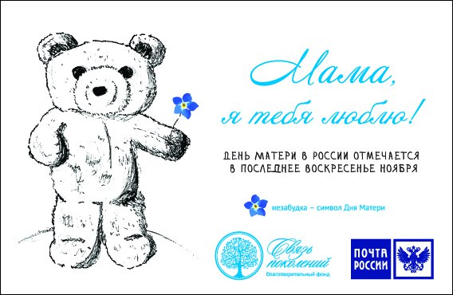

|

Хоть День матери в России и молодой праздник, он уже обрел свои традициями. Так, у него появился свой символ — незабудка.
Кстати, изображения плюшевых мишек с незабудкой в лапках — тоже атрибут праздника.
К этому дню приурочена Всероссийская социальная акция «Мама, я тебя люблю!».
По всей стране проходят концерты, конкурсы, акции, выставки. Особенно любят День матери в школах и детских садах.
Дети с удовольствием рассказывают стихи про мам, рисуют их портреты и делают подарки своими руками.
В учреждениях часто устраивают импровизированные выставки с фотографиями сотрудников и их родительницами.
Конечно же, в этот день стоит навестить самого дорогого человека — маму, и лучше не с пустыми руками. Ведь смысл праздника в том,
чтобы мы уделяли внимание своим матерям. Подарок или просто букет цветов маму, безусловно, порадует.
Своя культура праздника есть и в других странах. В Великобритании и Ирландии, например, принято готовить в материнское воскресенье
торт под названием «Симнель». Это кекс с кусочками сухофруктов и цукатов, специями, миндальной пастой и марципаном.
|